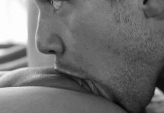

Acordamos com o som suave das gaivotas lá fora, mas não abrimos os olhos de imediato. Permanecemos deitados, abraçados, as pernas entrelaçadas sob os lençóis ainda amassados da noite anterior. Sua pele quente encostada na minha era o melhor tipo de despertador. Em silêncio, nossas mãos se procuraram devagar, com familiaridade e desejo. Um beijo longo, lento, com gosto de preguiça e saudade antecipada, nos levou para mais perto.
Capítulo 4
A manhã se estendeu mais do que o habitual. Entre lençóis, beijos quentes e mãos explorando sem pressa o corpo do outro, nos perdemos novamente — como se o tempo tivesse congelado para nos deixar viver aquele último dia como merecíamos: com intensidade e entrega. Como uma continuação dos nossos sonhos, uma transa fluida vinha se desenrolando.

Como um ato natural, desci te beijando até chegar em suas partes íntimas e, na suavidade da manhã, comecei a te chupar delicadamente. Você passava a mão no meu cabelo, estremeci e gemia nos meus movimentos. Conforme aquecemos, eu fui aumentando o ritmo e eu sentia a sua aprovação por gemidos cada vez mais intensos. Continuei com uma vontade absurda, como se sua buceta fosse o que eu mais queria desde sempre, como se você fosse o melhor prêmio que qualquer um pudesse ter. Então, de repente, você gozou gemendo alto.
Te virei de bruços e, com sua bunda meio empinada, coloquei meu pau completamente duro dentro de você. Toda molhada e quente por dentro. Eu apalpava sua bunda enquanto te fodia com força. Você pedia mais, queria mais do seu homem dentro de você, então debrucei por cima e te comi fazendo a cama balançar conforme minha cintura batia na sua bunda. Gemidos meus e seus se misturavam e com aquela visão majestosa que eu tinha, peguei seu pescoço, enforcando levemente. Conforme olhava nos seus olhos eu cheguei no meu máximo, gozei muito forte dentro de você. Senti seu corpo com as mãos mais uma vez enquanto eu tinha o orgasmo, apertando sua cintura contra a minha, acariciando sua bunda. Quando terminei, caí sobre você cansado.
Mais tarde, nos levantamos para o café da manhã no terraço. O céu estava limpo, azul profundo, e o mar brilhava como se celebrasse conosco. Tomamos o café em silêncio, um silêncio bom, cheio de significados. Sorrisos trocados entre goles de cappuccino e pedaços de croissant, toques sutis nos joelhos por baixo da mesa, um carinho rápido na nuca.
Depois, decidimos passar o dia com calma. Fizemos uma caminhada leve até o Castelo Brown, que ficava no alto de uma colina. Lá de cima, a vista era absurda: Portofino inteira aos nossos pés, como uma pintura viva. Você encostou no parapeito, de frente para o mar, e eu me aproximei por trás, enlaçando sua cintura. Beijei seu pescoço devagar, enquanto o vento bagunçava seus cabelos. Você riu e se virou para mim. O beijo veio intenso, urgente — cheio de promessa.
Voltamos ao hotel para arrumar as malas, mas o quarto parecia não querer nos deixar. Deixamos tudo por um tempo e nos jogamos mais uma vez na cama, ainda meio desfeita. Rimos. E então, entre beijos demorados e toques ousados, aquele quarto presenciou mais uma dança nossa — daquelas que só dois corpos íntimos, que se conhecem por inteiro, sabem dançar.
No fim da tarde, antes de partir, fizemos uma última caminhada pelo porto. O céu começava a mudar de cor, e o reflexo das luzes douradas na água nos dava uma sensação de filme antigo. Sentamos num banco, lado a lado, sem precisar de muitas palavras. Eu segurei sua mão com firmeza, e você recostou a cabeça no meu ombro. Só o som do mar, os barcos balançando ao longe, e aquele momento inteiro sendo gravado dentro de nós.
Na volta ao hotel, pegamos nossas malas. O motorista já nos esperava. Antes de cruzar a porta, olhamos para trás, para o quarto, para aquela varanda, para tudo que havíamos vivido ali — e sorrimos.